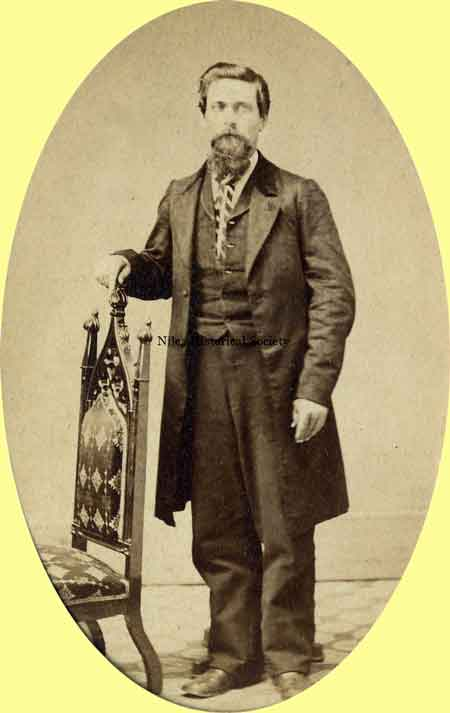

Ward-Thomas Museum


Mrs. Hiram Ohl
Ward — Thomas
Museum
Home of the Niles Historical Society
503 Brown Street Niles, Ohio 44446
Click here to become a Niles Historical Society Member or to renew your membership
Click on any photograph to view a larger image, click on image again to zoom into photograph.
| Residence of Mr. and Mrs. Hiram Ohl |
Mrs. Hiram Ohl, nearly 97, Related to 3 U.S. Presidents. Niles Daily Times, Special 1934 Edition. Mrs. Hiram Ohl (nee Alice M. Cleveland),420 Robbins Avenue, is not only a member of one of the pioneer families of this section, but she is also related to three presidents of the United States. (The name Cleveland often appears spelled Cleaveland in Ohl history). She is a third cousin to Grover Cleveland, a relative to president John Adams and president John Quincy Adams. She is a grand-niece to Moses Cleveland and a niece of Josiah Robbins, early settler in this community. Born in Austintown, December 23, 1837, the daughter of Matilda Robbins Cleveland and Camden Augustus Cleveland. Alice M. Cleveland was brought to Niles at the time of her father’s death when she was not yet two years old. Her uncle, Josiah Robbins, was then living in the house now used as Our Lady of Mt. Carmel rectory. The widow, Mrs. Cleveland, and her daughter Alice lived in the house next to the one occupied by Dr. F. Casper at the corner of Circle and Robbins Avenue.
|
|
Residence of Josiah Robbins |
“In 1906, Mount Carmel parishioners bought the residence of Josiah Robbins at Robbins and Linden Avenues and renovated it for use as a chapel. The home was so big, the chapel had seating for 300. It was later used as the Mt. Carmel rectory. Josiah Robbins settled in Niles in 1826 and lived in the home with his wife, Maria Heaton, daughter of James Heaton who had founded Niles less than a decade earlier”. Niles Daily Times, May 29, 1975. While she was living there she attended the red brick school on Linden Avenue, the site now occupied by the Niles Power Laundry. When Alice was nine years old she and her mother went back to Austintown and stayed there until they went to Hiram, Ohio so that the young woman might enter college. Among her professors at Hiram College was James Garfield who would become president of the United States. Alice’s education having been completed, they returned to Austintown and it was there that in 1865 the young woman married Hiram Ohl, whose father, Michael settled Ohltown and conducted a grist mill, a sawmill and oil refiner there. For a short time, Mr. and Mrs. Hiram Ohl lived in Austintown and came to Niles in 1872 at which time they moved into the Ohl home on Robbins Avenue. Except for a few houses on the hilltop, the area above the Ohl home was merely open fields. Mr. and Mrs. Ohl were the parents of Howard Cleveland Ohl, Alice Newport Ohl, and Nellie Robbins Ohl all of whom live in Niles. Mr. Hiram Ohl died in 1928. In spite of her 97 years, Mrs. Hiram Ohl is in good health and is quite active. |
|
|
Howard Cleveland Ohl |
Alice Newport Ohl |
Nellie Robbins Ohl |
|
|
||
|
Matilda Robbins Cleveland |
 Hiram Ohl |
Eva Meyers Ohl |
|
|
||
|
|
||

{kind=link}
{kind=link}
{kind=link}
{kind=link}
{kind=link}
{kind=link}